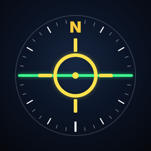

Sightline
Camera theodolite for iPhone · Maplewire Labs
Point, read, capture.
Sightline turns your iPhone camera into a theodolite. Put the crosshair on anything and read its compass direction (azimuth) and its angle above or below the horizon (elevation).
- Live azimuth and elevation, true or magnetic north
- Photos and videos stamped with direction, angle, time and location
- Bubble level
- Sightline Pro: Auto Level Shot, angle grid, angles between two points, heights, reading log with CSV export, video timer
No account, no ads, no tracking. Everything stays on your iPhone.
Questions? Visit Support or write to support@maplewirelabs.com.